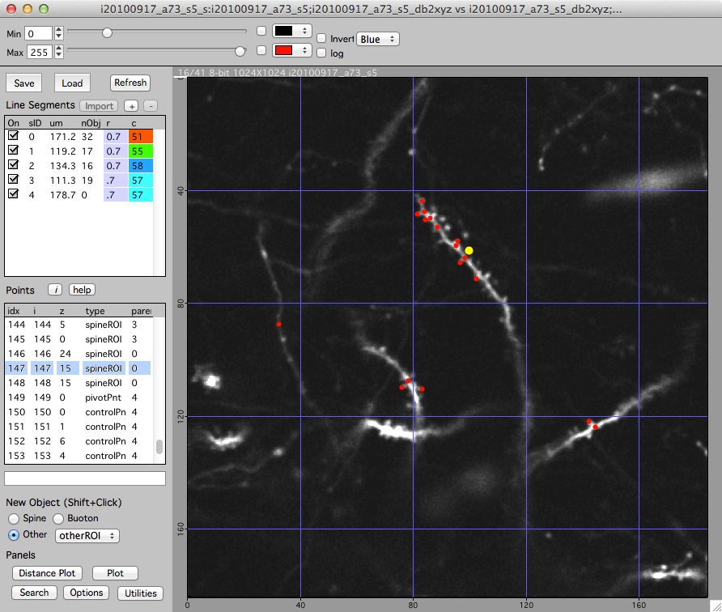

Stack Annotations
3D Annotations are the core of Map Manager. They are easy to create, edit, and in a map to connect them between time-points. Annotations can be searched, plotted, and exported.
Creating and Editing 3D annotations

There are two types of annotations, spines and other. To create spines, a line segment has to be traced and then spines are attached to this segment.
Creating an annotation
Shift+click in the image to create a new annotation. Remember, all annotations are 3D. Take care in choosing the imaging plane where you create an object. For spines, the point should mark the membrane limit near the tip of the spine.
Selecting an annotation
Single-click on an annotation to select it. The selected annotation is shown as a yellow circle. Only one annotation can be selected at a time. Keyboard esc will cancel the annotation selection.
Moving an annotation
Select the annotation (single click), right-click and select ‘Move’. Your next click will be the new 3D position of the annotation. You are given feedback in the bottom of the stack window. Press keyboard esc to cancel a move.
Deleting an annotation
Select the annotation (single click), right-click and select ‘Delete’. Alternatively, select the annotation (single-click) and hit the del key.
Tip. All annotations are 3D points. When an annotation is created, the x/y position is specified by the position of the mouse cursor and the z position is the currently viewed image plane. To create a new point with better precision, zoom in the stack window with ctrl + mouse-wheel or keyboard '+'. As always, zooming will follow the mouse pointer.
Tagging annotations with ‘bad’ and ‘user type’
Each annotation can be marked with different tags. To see most of the tagging options, right-click a selected annotation and look at the contextual popup menu.
-
Tagging an annotation ‘bad’
All annotations tagged with ‘bad’ will not be included in the analysis performed in reports and their visibility can be toggled in all plots. In general, stacks should be over annotated and ‘bad’ should be used to remove an annotation from the analysis but not from the database of annotations. In this way, as data sets grow (and time passes) when you return to something that looks promising (but is not), it will already have a ‘bad’ annotation.
-
Tagging and annotation with a ‘user type’
Each annotation can be tagged with one user type, from user type 1 through user type 10. This is useful for organizing annotations into different groups. Annotation user type can be searched, used to plot subsets of annotations, and used to create a mask of annotations to overlay over a plot. For example, long spines cold be taged with ‘user type 1’ and then reports can be generated that break down the dynamics of all versus ‘user type 1’ spines.
Exporting annotations
It is very easy to export the 3D coordinates of annotations.
-
Open the left control bar with keyboard [, click on the list of annotations and then press keyboard e. This will open a text table of all annotations in the stack, you can copy and paste it into your favorite analysis program. See stack report for more information.
-
When you save a stack or a map, all the annotations in each stack is saved in a single text file. The file can be found in a folder named ‘stackdb’ in the hard-drive folder of your original stack. See File formats for more information.
-
We provide, Map Manager - Matlab, an easy to use Matlab class library that allows all Map Manager analysis to be extended using Matlab.
Creating and editing line segments
Line segments are fit using a custom Fiji plugin from within Map Manager, there is no need to manually interact with Fiji. The path to Fiji does need to be set in the hard drive paths panel.
All the line segments in a stack are listed in the ‘Line Segment’ group. Each line segment has a length (um), a number of objects (nObj), a radius (r), and a color (c).
Creating line segments
- Make sure ‘Segments’ edit checkbox is turned on. This is in the left control bar which can be opened with keyboard [.
- Create a new (empty) line segment
Click the + button in the ‘Segment’ group. - Make a series of 3D control point annotations along a dendritic segment.
- Shift-click in the image to create a control point.
- Continue making control points along the dendritic segment.
- Fit the line segment in FIJI
- Right-click on the new line segment (in the top left list of segment) and select ‘Make From Control Points - FIJI’. This will open the ‘Bob Neurite Tracer’ plugin in FIJI, fit a line to your control points and open the fitted line segment in the map manager stack window.
Important: When making control points, they need to be in order along a segment. If you double-back a control point on the segment, the line fit with dumbly follow this ordering of control points. If it all gets confusing you can just delete all your control points and start over.
Important: When making a map, you will be connecting (e.g. making persistent) individual line segments from one timepoint to the next. For segments that you will connect together in a map, make sure your control points are in the same direction along each segment. If your control points go left to right in time-point 1, they should also go left to right in time-point 2.
Line segment radius
Each line segment has a fixed radius in um. Spines are connected to this radius. To change the radius, double-click the radius for a segment and enter a new number. The radius of each segment is displayed in the ‘r’ column. Setting the radius will reconnect all your spines to that new radius while preserving the spine connection point to the line. To set all the radii of a run of connected segments, right click on the segment in the list and select ‘Set run to same radius’.
Line segment pivot points
When in a map, line segments need a ‘pivot point’. Specify a pivot point for a segment by clicking a point in the segment, right-click and select the ‘Set As Segment Pivot’ menu.
The pivot point should mark a region of the segment that is visually similar and identifiable in all time-points. A good strategy is to choose a region of the segment near a large spine that is present in all time-points. Another strategy is to choose a pivot point where some other segment (dendrite) crosses near your segment as these tend to remain stable across time. Try and put the pivot point near the center of the segment, do not place it at either end. The pivot point is used to calculate a line distance along the segment (in um) which in turn will be used to auto-guess connections between objects (spines) across time-points.